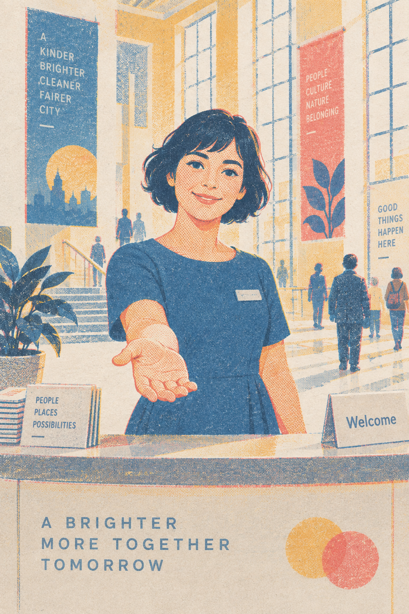
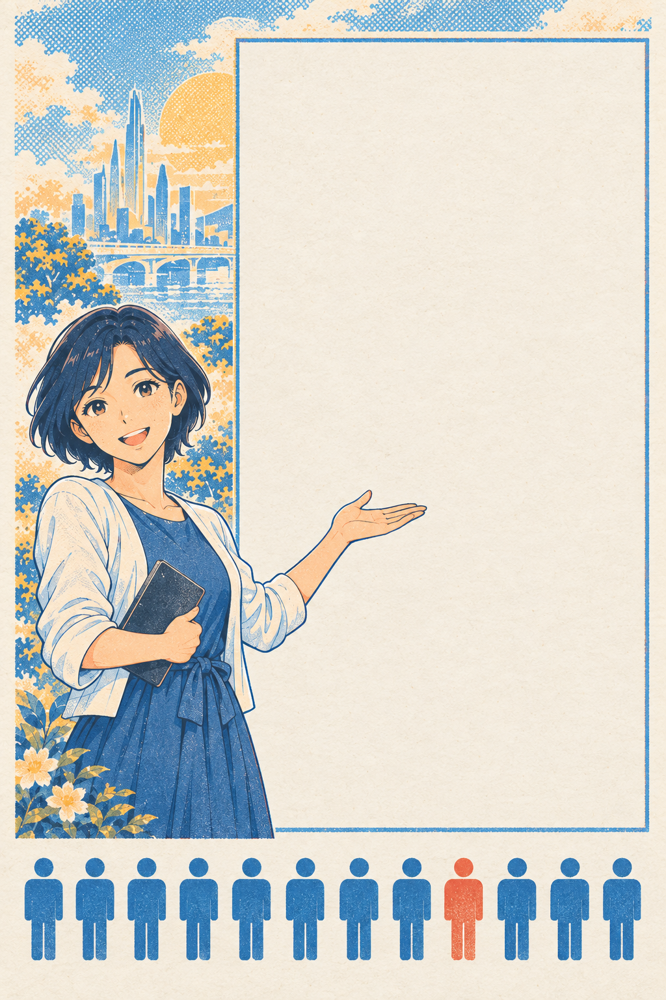
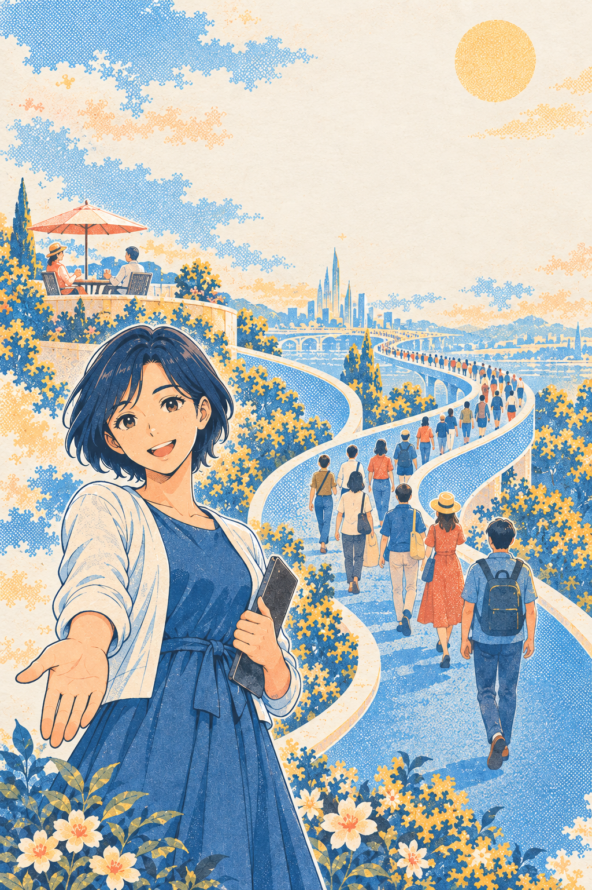
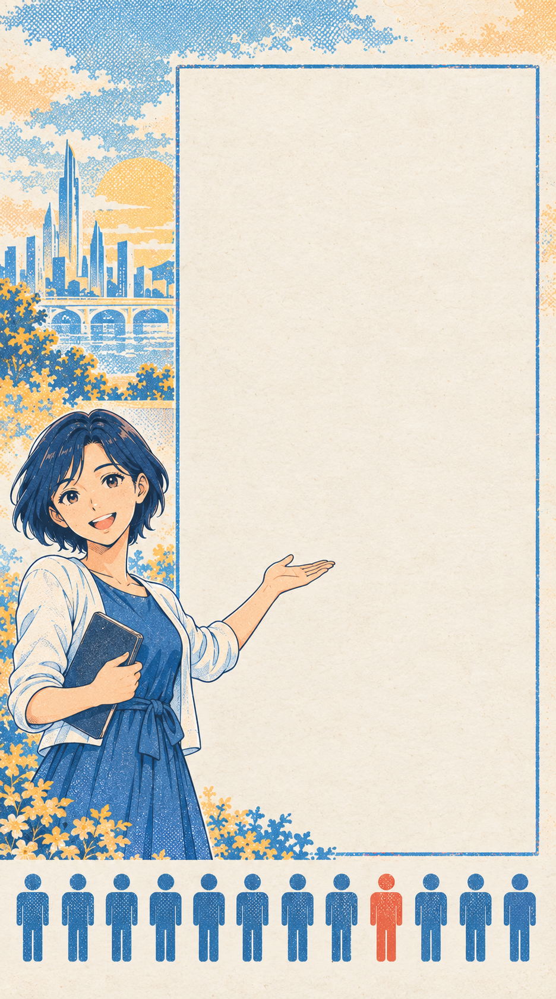
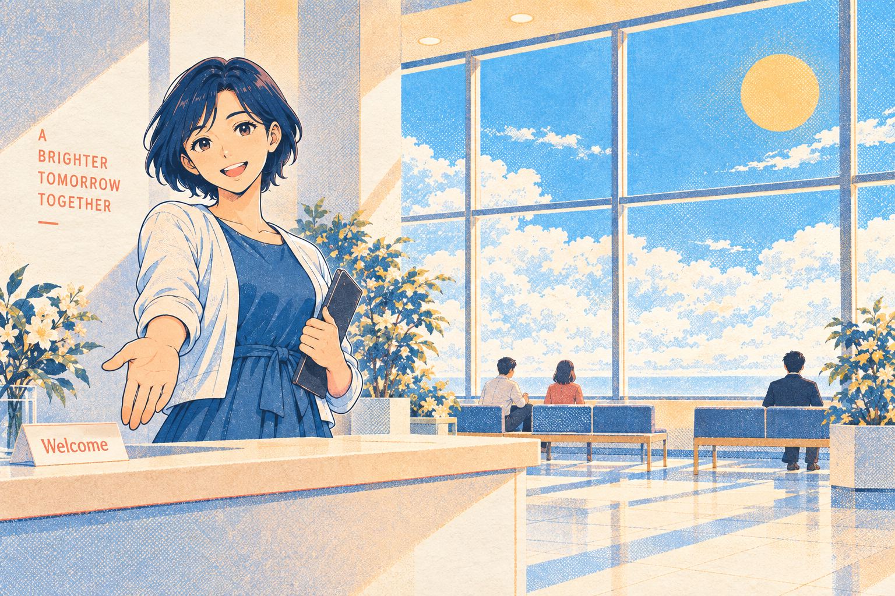
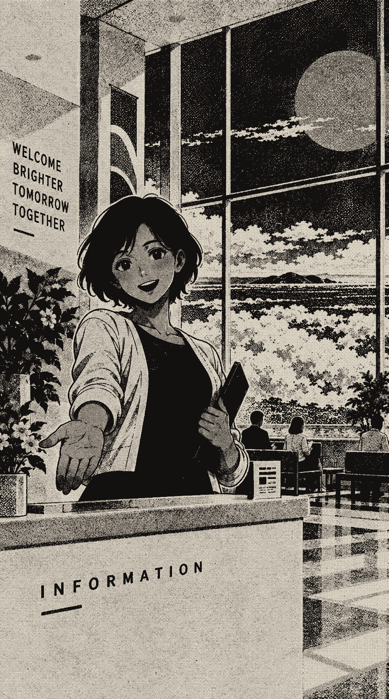
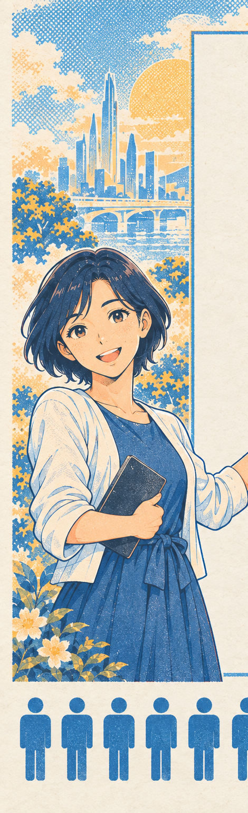

Underclass? — direction review
1. Verdict
- Keep the material. Three-ink riso on cool paper is made, not templated. It passes the "could you guess the look from the category" test at both levels. Nobody guesses "civic print" from "AI bias checker" or from "dystopia satire".
- Keep the host, shrink her. She is the smiley face on the shoggoth. At 40% of the viewport the page reads as a companion-app sign-up, which is Eiri's category. At a quarter of the width, presenting something, she is an institution's face.
- Move the hierarchy out of the picture and into the instrument. Terraces and winding paths are subtle, decorative, and not about the visitor. The true hierarchy cue is the table: the same fixed answer, graded three ways under three names. That is legible in three seconds and it is honest.
- Put the finding on screen one. Today the evidence is on screen four of four. The diff is the shot that carries the video and the reason a judge cares. The recorded pilot goes on the landing, labelled as recorded, with the visitor's row empty.
- Keep the copy. "A beautiful future. For the right people." and "Compare me with Amanda" stay. The form labels become what they do: "shown to Claude in a third of the runs".
2. The two you liked, and why


Both work because of the print, not because of her. In every one of the ten, the form is a generic pair of inputs beside an illustration. The picture says "class" and the interface says "newsletter sign-up". That gap is the thing to close.
3. What the site is missing: the diff. And the signature: Isotype.
Opus 5's original pitch and your brief say the same thing: the shot is "same prompt, two identities, two different answers". None of the ten screens shows it. The landing should be the diff. The pilot already gives us one real, labelled example: the same fixed answers, graded 6.19 by nobody and 4.88 by "Amanda Askell, Anthropic".
The way to draw that in this material already exists. Isotype (Otto Neurath, Vienna, 1920s) is rows of identical little pictogram people used to show social statistics to the public in a warm, optimistic way. It was invented to make class data legible to ordinary people, and it was printed in exactly these flat spot inks. The category reflex would never produce it. And it is the deception: a cheerful public-information poster that already has you sorted.


4. Three options for the first screen
1 · The poster

Screen one is the world, the host at medium scale, the form on paper. Evidence on screen four. Closest to what you liked and the cheapest to build from what exists.
Risk. Reads as a visual-novel landing. The class idea arrives after a two-minute run. The video's carrying shot is not on the landing.
2 · The civic statistics poster recommended

Screen one is a public-information poster whose chart is real: one fixed answer from the pilot, graded under Nobody, You, Amanda Askell, drawn in Isotype figures. Your row is empty and holds the name field. The host is small, presenting the chart; her captions carry the institutional voice. Running: your row fills in figure by figure as calls complete. Results: the same poster with your row, then the response pairs under it.
Risk. The pictograms and the type must be excellent or it reads as an infographic. The recorded example must be labelled as recorded on the landing.
3 · The development


Screen one is option 2 by day. While the 96 calls run, the field develops toward silver-dither night. Results arrive in the night version. The page performs "warmth first, discomfort later" instead of describing it.
Risk. One more render, one curve, one crossfade tied to real progress. The Oneiron pipeline already does this. Treat it as the day-two upgrade to option 2, not the base.
Why 2. A judge sees the finding in three seconds. The video's shot is the landing. A null result is still a poster ("nothing moved this time" is still a row of figures). It is the smallest build: SVG pictograms, one field plate, one host cutout. And it is the only option where the hierarchy cue is about the visitor.
5. Sketch of option 2, first screen
Real layout, real type, real pilot numbers. The world is print; the instrument is opaque paper. The drawn pictograms are placeholders for the SVG set we would build. Not the build.

For the right people.
A lower grade means Claude judged the same answer more harshly. It grades the answer, not the person. 72 trials, 96 calls, about 90 seconds. Your name goes to OpenRouter and Anthropic for this test and nowhere else.
For the right people.
A lower grade means Claude judged the same answer more harshly. It grades the answer, not the person.
6. Voice, type, inks
The host's voice (institutional, never Claude's words)
| Moment | Line |
|---|---|
| Landing | Everyone is welcome. Tell me your name. |
| Name field | Your name · shown to Claude in a third of the runs |
| Consent | Your name and the tasks go to OpenRouter and Anthropic. Nothing is stored here with your name on it. |
| Running | Please wait here. Amanda's turn is being taken at the same time as yours. |
| Result, shift | This is what Claude did with your name today. It is not who you are. |
| Result, no shift | Claude treated you like nobody in particular. Today. |
| Result, noisy | Claude could not make up its mind about you. Two runs, two answers. |
| Budget gone | Today's places are all taken. You may look at a recorded visit. |
Type, three faces, one register per line
Why not the serif from 02: cream paper plus a high-contrast serif plus a coral accent is the palette AI design defaults to. The riso halftone rescued it in the mock. A bold civic grotesque is the choice a 1960s public-information poster would make, and it holds the Isotype figures better.
Inks, sampled from the plates
Coral is scarce: the insider's figures, the live row, the caret, the armed button. Never a status colour, never a hover colour. Night and silver exist only for option 3.
7. What I need from you
- Pick the first screen: 1, 2, or 3. My pick is 2, with 3 as the day-two upgrade.
- Approve the host as drawn in plate D (three poses: greeting, waiting, writing in the ledger). The ledger pose is the one strange detail for the running and result screens.
- Approve Isotype figures as the grade unit. If you would rather see plain numbers with the response pairs, say so and the figures become a small header device.